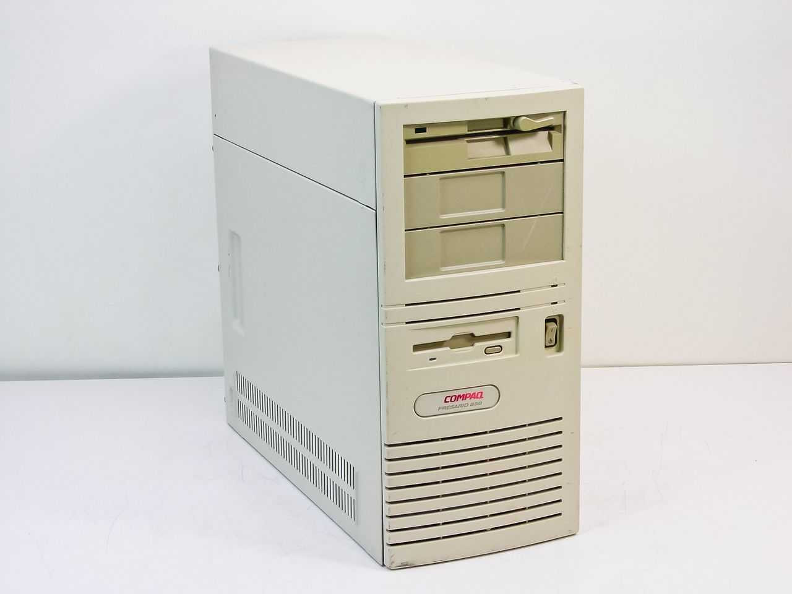
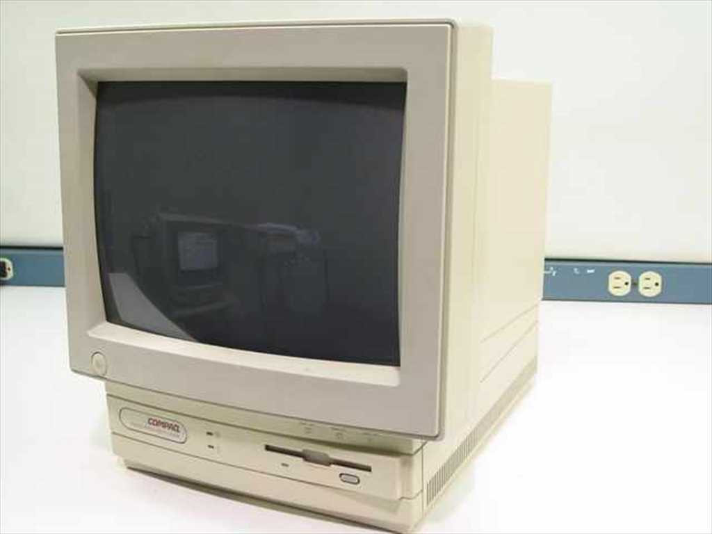
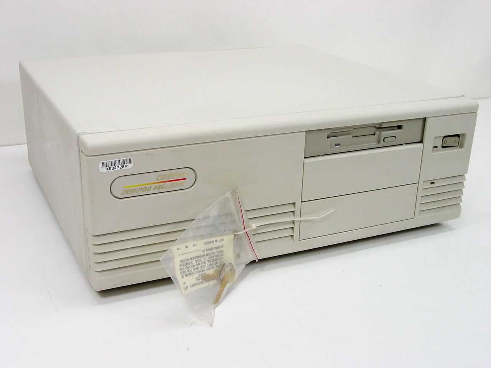
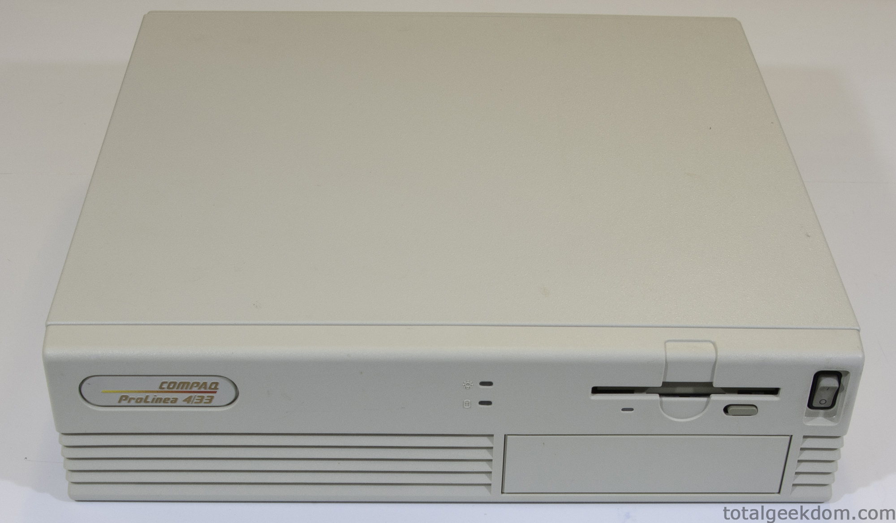

The Compaq Deskpro was manufactured by Compaq as a line of business-oriented desktop computers until replaced by the Evo brand in 2001, with the latter being originally produced up until Compaq merged with HP in 2002, making it (alongside other models at the time) the last computers sold by Compaq prior to the 2002 merger.



